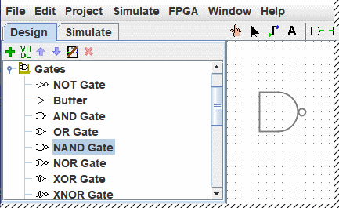
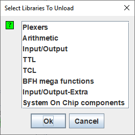

חלונית הסייר

|
ללוח הניווט שתי פונקציות. זה יכול להציג את המעגלים המדומים בתצוגה סימולציה או כמו כאן המעגלים בראש הרשימה ו הספריות התחתונות המיוצגות על ידי סמלי תיקיות. ספריות אלו כוללות כלים שתוכלו להשתמש בהם פרויקטים. |
כדי לגשת לרכיבים של ספריה פשוט פתח את הספרייה בלחיצה כפולה על התיקיה המתאימה או לחיצה על המקש הקטן ולאחר מכן בחר בכלי עם לחץ לחיצה ימנית על הכלי. לאחר מכן העבר את סמן העכבר על הבד וציור רפאים של הכלי יעקוב אחר סמן העכבר עד שתבצע את הלחיצה האחרונה על פני השטח כדי להפיל אותו אל הנבחר מקום.
להלן, פתחתי את ספריית גייטס ובחרתי ממנה את הכלי NAND. אתה יכול לראות ש-Logisim עומד כעת מוכן להוסיף שערי NAND למעגל.

אם תסתכל על האפשרויות בספריית גייטס, תבחין שלא היה לנו צורך לפתח מעגל XOR קודם לכן: הוא מובנה ב-Logisim.
כאשר אתה יוצר פרויקט, הוא כולל באופן אוטומטי מספר ספריות:
- חיווט : רכיבים המקיימים אינטראקציה ישירה עם חוטים.
- שערים: רכיבים המבצעים פונקציות לוגיות פשוטות.
- פלקסרים: רכיבים שילוביים מורכבים יותר, כמו מרבים ומפענחים.
- חשבון : רכיבים המבצעים חשבון.
- זיכרון: רכיבים שזוכרים נתונים, כמו כפכפים, אוגרים ו-RAM.
- קלט/פלט: רכיבים שקיימים למטרת אינטראקציה עם המשתמש.
- TTL : רכיבי ה-TTL הקלאסיים של משפחת 74 במארז DIL שלהם.
- TCL : לא תיעדתי כרגע
- HDL-IP : לא תיעדתי כרגע
- BFH mega function : לא תיעדתי כרגע
- קלט/פלט-תוספת : לא תיעדתי כרגע
- רכיבי System On Chip : רכיבים שנמצאו מוטמעים בחלק מה-FPGAs
ספריות
Logisim מאפשרת להוסיף גם ספריות נוספות באמצעות התפריט | פרויקט | → | טען ספרייה | או על ידי לחיצה ימנית על תיקיית השורש של חוקר הפרויקט. ניתן לראות שללוגיסים יש שלוש קטגוריות של ספריות.
- ספריות מובנות הן ספריות המופצות עם Logisim. אלה מתועדים ב הפניה לספרייה.
- ספריות לוגיסים הן פרויקטים שנבנו בתוך לוגיסים ונשמרים בדיסק כלוגיסים פּרוֹיֶקט. אתה יכול לפתח קבוצה של מעגלים בפרויקט יחיד (כמתואר ב-קטע מעגלים משנה במדריך זה) ולאחר מכן השתמש בקבוצת מעגלים זו כ ספריה לפרויקטים אחרים.
-
ספריות JAR הן ספריות שפותחו ב-Java אך לא מופצות עם Logisim.
אתה יכול להוריד ספריות JAR שאחרים כתבו, או שאתה יכול לכתוב ספריות משלך כמתואר ב-ספריות JAR במדריך זה. פיתוח ספריית JAR הוא הרבה יותר
קשה מלפתח ספריית Logisim, אבל הרכיבים יכולים להיות הרבה יותר מפוארים, כולל דברים כמו
תכונות ואינטראקציה עם המשתמש. הספריות המובנות (מלבד Base")
נכתבו באמצעות אותו API שבו ספריות JAR יכולות להשתמש, כך שהן מדגימות בצורה נאותה את הטווח של
פונקציונליות שספריות JAR יכולות לתמוך בה.
מספר ספריות JAR מופצות ללא כל מידע על איזו מחלקה של Java להתחיל. מתי טוען JAR כזה, Logisim ינחה אותך להקליד שם מחלקה. שם הכיתה הזה צריך להיות מסופק על ידי מי שהפיץ לך את קובץ ה-JAR.
כדי להסיר ספריה, בחר בתפריט | פרויקט |→| הסר ספרייה ... |. Logisim תמנע ממך לפרוק ספריות המכילות רכיבים המשמשים במעגל, המופיעים ב- סרגל כלים, או שממופים ללחצן עכבר.

אפשר גם לעשות זאת על ידי לחיצה על קליק שמאלה בספרייה כדי להשבית.
אגב, ספרייה טכנית מכילה כלים, לא רכיבים. לפיכך, בספריית Base תמצא את ה-כלי לתקוע ( ), הכלי עריכה (
), הכלי עריכה ( ), וכלים אחרים שלא ט
מתאימים ישירות לרכיבים בודדים. עם זאת, רוב הספריות מכילות רק כלים להוספת יחידים
רכיבים.
), וכלים אחרים שלא ט
מתאימים ישירות לרכיבים בודדים. עם זאת, רוב הספריות מכילות רק כלים להוספת יחידים
רכיבים.
הבא: סרגלי כלים.